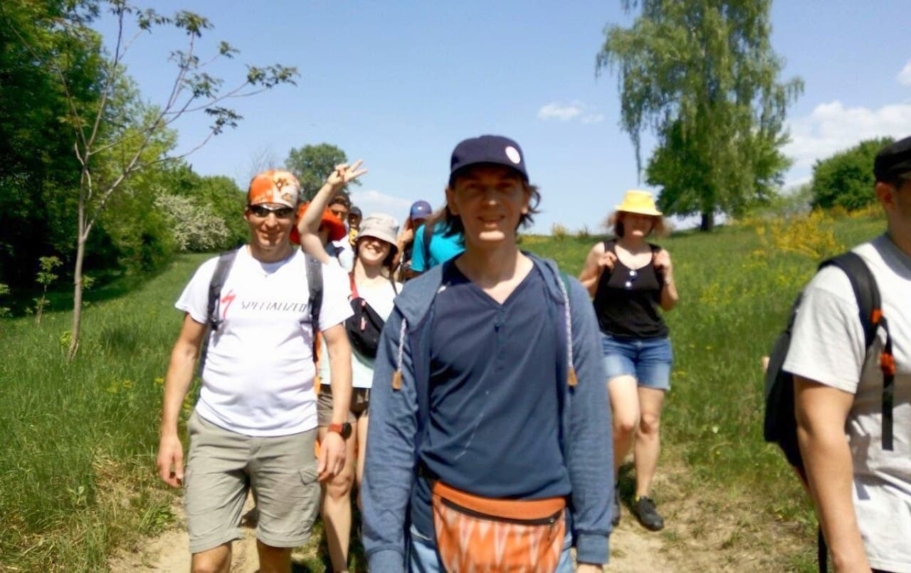
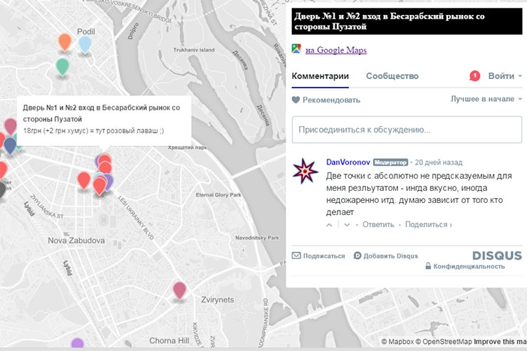
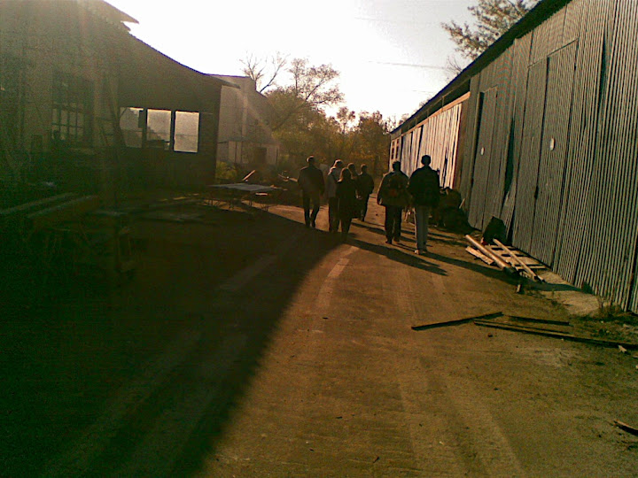

CITY AND MAPS
Babiy Yar history

2019–23 Telegram bot that use live location feature to tell immersive story about Babiy Yar (Kyiv) events during WW2 and holocaust tragedy.
Started as google apps script and then evolved to fully custom engine with KML parser and Telegam bot API POST wrapper [node.js].
Throught the Kyiv
2017–19 New Kyiv urban hikes: Throught the City for all day walking. 35-44 km in a group of strangers for free.
Elaboration of an interesting routes. Coordination in telegram @kievpohod. JS code for showing route's main points and estimated time on map.
Falafel map
2016–17 Mapping of Kyiv's falafel points with price and commenting. Active exploration and degustation around the city.
Managing community of falafel lovers in vk.com and fb.
JS code. Transition from MapBox to Google map. DISQUS commenting widget. Archive on /kievfalafel
Kyiv urban hikes
2010–11 Open Saturday's hikes thru unknown Kyiv. Started from new vk.com section "looking for a travel companion".
Public speaking about the importance of knowing where you live. Creating video from my Pecha Kucha presentation.
Website-catalog /kievpohod was build with WordPress engine. Using Yandex map and Google Picasa photo albums.